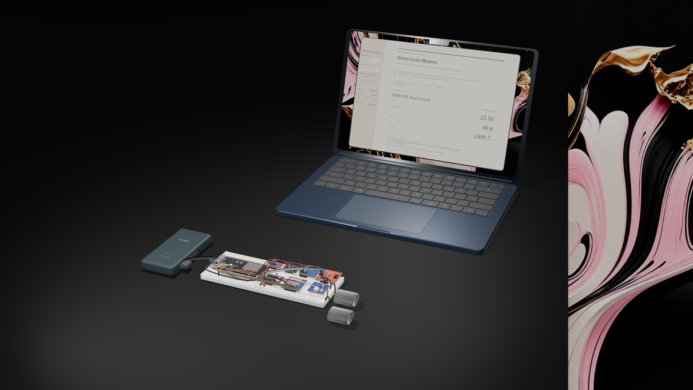

Pathos IoT / 01
Pathos IoT
PHYSIOLOGICAL AWARENESS, ENGINEERED.
04 · Hardware in 3D
Scroll to take it apart.
Scroll to explore the guided visual, or choose the live 3D view.

Preparing the guided visual…
Pathos IoT / 01
PHYSIOLOGICAL AWARENESS, ENGINEERED.
Pathos IoT / 02
ONE BREADBOARD. EIGHT CONNECTED MODULES.
Pathos IoT / 03
ESP32-S3 / ACQUISITION, CONTROL AND WI-FI
Pathos IoT / 04
TMP117 / ADS1115 / MPU6050 / MAX30102 / BME280
Pathos IoT / 05
ELECTRODES > GSR > ADS1115 A0 > I2C > ESP32-S3
Pathos IoT / 06
ESP32-S3 > DEDICATED SPI > microSD
Pathos IoT / 07
ESP32-S3 > WI-FI > LAPTOP
The laptop shows the Pathos IoT v1 software: Live Instrument, Model Study, Source Data and Diagnostics.
Pathos IoT / 09
SENSORS > ESP32-S3 > WI-FI > PROCESSING > V4 > DASHBOARD
Stress You Can’t See,
Awareness You Can.
Engineering concept · body sensors in development. This study shows the intended system. The laptop displays the original v1 software, not live physiological readings.